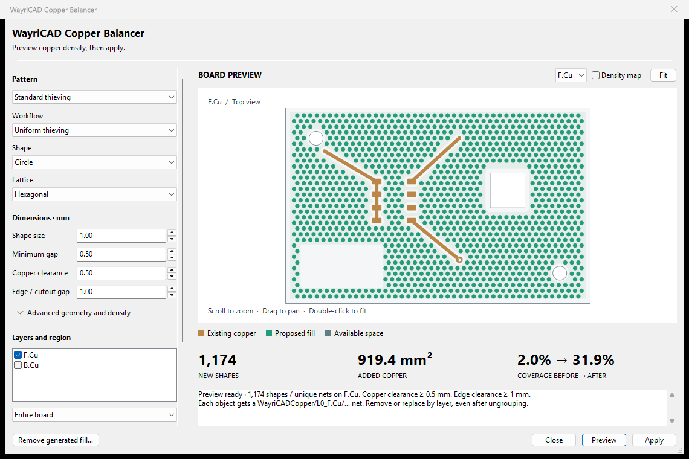
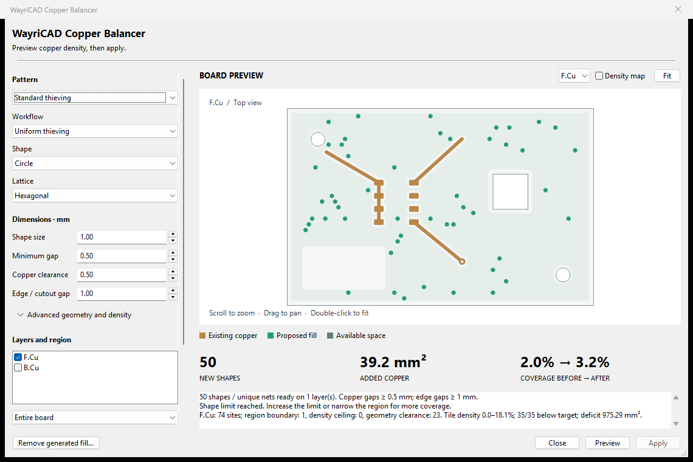

Open a saved PCB, choose a pattern and copper layers, then preview. Expand advanced geometry and density only when needed. Save the result to a new board copy.

Scroll to zoom, drag to pan, double-click to fit. The density map shows existing and proposed coverage. Targets are ceilings, not guaranteed final coverage.
Fill source zones before planning. Open the output copy, refill zones and run KiCad DRC before fabrication. The source PCB and unsaved editor state are never changed by the PCM workflow.
This engine requires native KiCad 10 Python. Set WAYRICAD_KICAD_PYTHON if discovery fails. Live IPC copper editing and KiCad 11 geometry are not supported yet.
wayricad-copper board.kicad_pcb --layer F.Cu prints a plan summary. Add --output new-board.kicad_pcb to save a new copy. Existing files cannot be replaced.
Full feature and command-line reference

Rejection counts distinguish region boundaries, density ceilings and combined geometry/clearance checks. Each layer reports tile density range, tiles below target and remaining area deficit. Existing over-target tiles are preserved and reported. Invalid/nonfinite dimensions and impossible geometry measurements stop planning. These are coverage diagnostics, not plating simulation.
Size, gap, copper clearance, edge clearance, tile size and band width are millimetres; target is percent copper coverage. Start with one enabled copper layer and a modest shape limit, then compare the density map before adding layers. Manual rectangle bounds use PCB coordinates, not the visible screen rectangle. The saved-copy launcher cannot read a live editor selection.